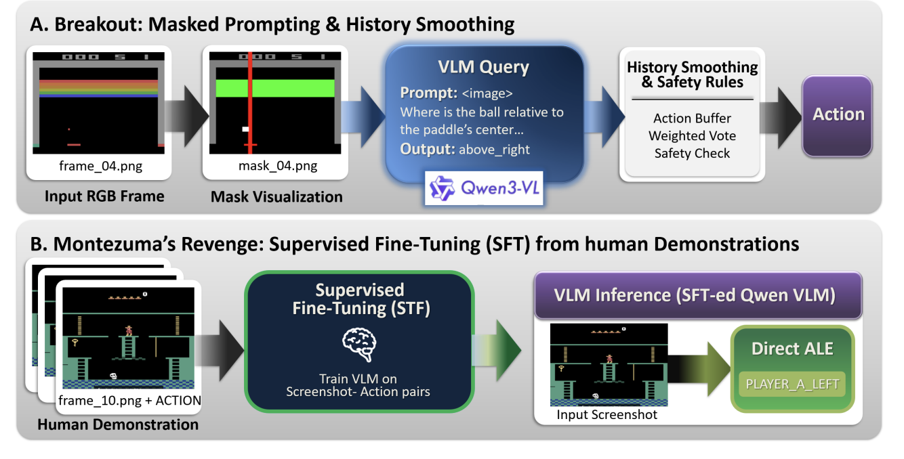

My Work
VLM_GAMING
We study how off-the-shelf vision-language models (VLMs) can act as closed-loop game-playing agents in Atari. We build a lightweight, modular pipeline that turns rendered frames from the Arcade Learning Environment into com- pact visual inputs, queries a VLM for an action in natural language, and executes the action in real time. Key topic: Vision-Language Models; setting: Atari.
View Project Paper & Video
- We study how off-the-shelf vision-language models (VLMs) can act as closed-loop game-playing agents in Atari.
- Vision-language models for decision making.
- Atari and deep reinforcement learning.
| Game | Average Score |
|---|---|
| Breakout | 350 points |